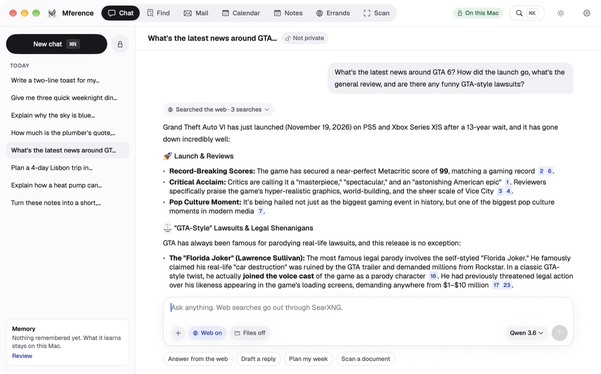
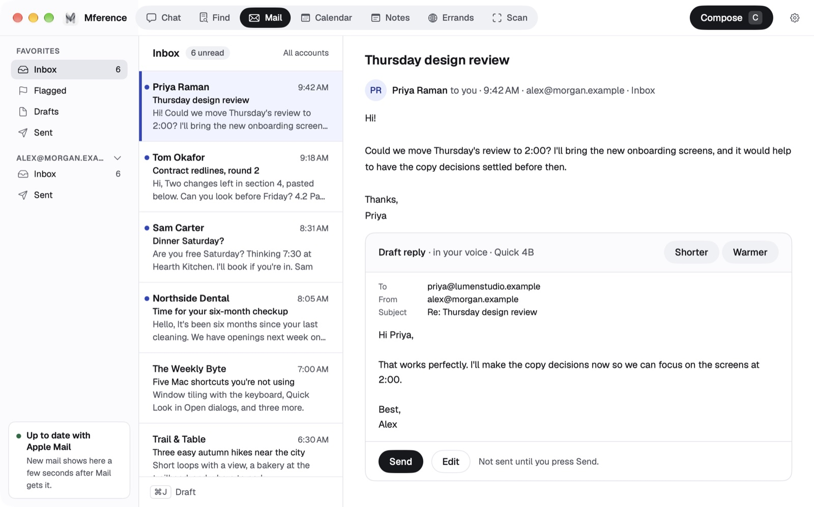
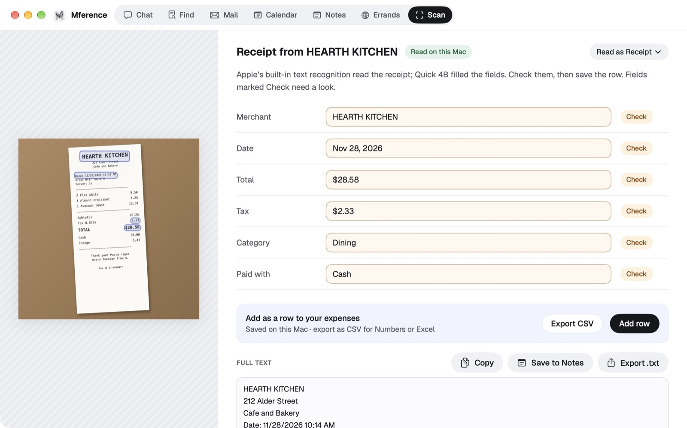

Features
Six jobs. One assistant. No cloud.
Each part of Mference does one everyday job well, and all of them share the same model, the same memory and the same rule: your data stays on the Mac.
Chat
Ask anything. It stays on this Mac.
Talk to a local model the way you would to any assistant. Turn on web search and answers come back with numbered citations.
- Web search runs through a search engine bundled inside the app, which queries public search engines, not an AI provider
- Answers from your own files, with sources
- Paste a picture and ask about it
- Private chats are never used for memory

Find
Search what's inside, not what it's called.
"The lease clause about pets." "That screenshot with the wifi password." Word matches show as you type and meaning matches follow, from any app with ⌥Space.
- Photos, video and audio too: the zebra photo, the moment in a video, the voice memo about the plumber
- Your Photos library, if you allow it
- The index and its small search model stay on your Mac
Your inbox, sorted and answered.
Mference reads your Apple Mail mailboxes, puts what matters on top and drafts replies in your voice. Shorter, warmer, or your own edit.
- Nothing is sent until you press Send
- Tracking pixels are removed before you read
- Meeting changes in a message become a proposed calendar event

Calendar and to-dos
The week at a glance, and in plain words.
Day, week, month and year views of your calendars, with to-dos kept in sync with Reminders. Ask "what's my week like?" and get a straight answer.
- Events proposed from your mail, added only when you say so
- Works with the calendars you already have

Notes
Meetings that write their own minutes.
Notes with checklists, headings and attachments. Dictate into any note, record a meeting with speaker labels, or transcribe an audio file.
- A summary of decisions and action items when the meeting ends
- Speech recognition runs on your Mac
- Its models download only when you set Notes up
Decisions and action items
- Ship onboarding Wednesday
- Tom: final copy by Monday
- Priya: book review, Wed 11:00
Scan
Point, scan, done.
Scan a receipt or a document. On-device text recognition reads it, and the model fills in merchant, date, total and tax for you to check.

And more
Small things that add up.
Memory you can read
The things it remembers about you are listed in one place, all on this Mac. Review or remove any of them.
In the menu bar
Start a chat or a private chat from the menu bar without opening the window.
Models from inside the app
Download a model in a click, and see how much memory it needs on your Mac before you load it.